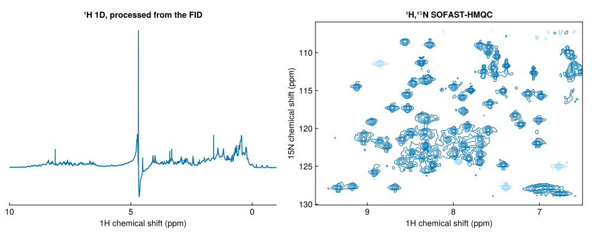

NMRTools.jl
NMRTools.jl is a Julia library for NMR spectroscopy data. It reads and writes 1D, 2D and higher-dimensional datasets, processes raw time-domain data, and exposes spectra as named-dimension arrays with full metadata support. Quadrature is carried by multicomplex numbers, so each dimension of a multidimensional experiment has its own imaginary unit.
using NMRTools, CairoMakie
spec1d = exampledata("1D_1H"; fid=true) |> autoprocess # process a raw FID
spec2d = exampledata("2D_HN") # load a processed spectrum
fig = Figure(size=(1000, 400))
nmrplot(fig[1, 1], spec1d; xlims=(-1, 10), title="¹H 1D, processed from the FID")
nmrplot(fig[1, 2], spec2d; xlims=(6.5, 9.6), title="¹H,¹⁵N SOFAST-HMQC")
Features
- Multi-format support: read Bruker (processed and raw
fid/ser), nmrPipe and UCSF/Sparky data; write Bruker processed data and raw FIDs - Processing: composable apodization, zero-filling, Fourier transform, phasing, linear prediction and solvent suppression, with automatic phasing and a one-step
autoprocess - Peaks: N-dimensional peak picking, peak lists that are Tables.jl tables, registration of a peak list onto a spectrum, and NMRAnalysis.jl and Sparky peak list files
- Assignments: predict peak lists from BMRB chemical shifts for any correlation experiment, and register them onto your spectrum
- Combining experiments: add, subtract and weight raw Bruker experiments
- Chemical shift indexing: array-like indexing with chemical shift values using
spec[8.0 .. 9.0]syntax - Plotting: publication-ready plots with Makie or Plots.jl, with contour level and colour control
- Metadata: acquisition parameters from Bruker
acqusfiles, pulse programme annotations and sample information; window functions, power levels and frequency lists represented as typed objects - DimensionalData.jl integration: named dimension arrays with selectors for frequency, time and gradient dimensions
Installation
using Pkg
Pkg.add("NMRTools")The Getting started guide continues from here.
Where to go next
- Getting started: load, plot and process your first spectra
- Tutorials: working with spectra, processing, peaks, assigning a spectrum from the BMRB and relaxation analysis
- Tools: combining experiments and peak lists from the BMRB
- How-to guides: loading, processing, referencing, saving, plotting, peaks and metadata tasks
- Concepts: the NMRData model, dimensions, multicomplex numbers and Bruker conventions
Citing NMRTools
If you use NMRTools.jl in published work, please cite it using the details in CITATION.cff.
Related packages
NMRTools.jl is part of a suite of Julia packages for NMR data handling developed by the Waudby lab:
- MulticomplexNumbers.jl: multicomplex number types with an FFTW extension, providing the algebraic representation of multidimensional NMR data.
- NMRAnalysis.jl: quantitative NMR data analysis, with a focus on biomolecular relaxation, diffusion, exchange and protein dynamics measurements.
- NMRScreen.jl: tools for fragment screening by NMR, including automated analysis of large compound libraries.